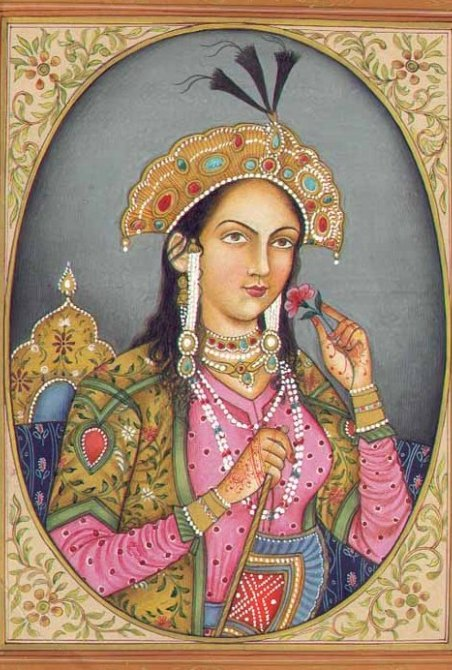
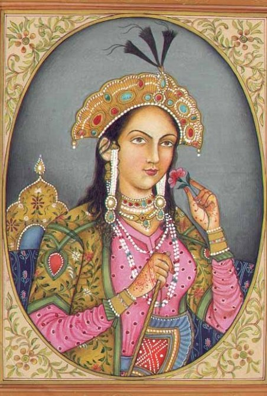

Agra
India
The Taj Mahal ("Crown of the Palace") is an Islamic ivory-white marble mausoleum on the right bank of the river Yamuna in the Indian city of Agra.
It was commissioned in 1631 by the Mughal emperor Shah Jahan (1628-1658) to house the tomb of his favourite wife, Mumtaz Mahal; it also houses the tomb of Shah Jahan himself. The tomb is the centrepiece of a 17-hectare (42-acre) complex, which in cludes a mosque and a guest house, and is set in formal gardens bounded on three s ides by a crenellated wall.
 

Construction of the mausoleum was essentially completed in 1643, but work continued on other phases of the project for another 10 years. The Taj Mahal complex is believed to have been completed in its entirety in 1653. The construction project employed some 20,000 artisans under the guidance of a board of architects led by the court architect to the emperor, Ustad Ahmad Lahauri. Various types of symbolism have been employed in the Taj to reflect natural beauty and divinity.
The Taj Mahal was designated as a UNESCO World Heritage Site in 1983 for being "the jewel of Muslim art in India and one of the universally admired masterpieces of the world's heritage". It is regarded by many as the best example of Mughal architecture and a symbol of India's rich history. The Taj Mahal attracts more than 6 million visitors a year.
In 2007 it was declared a winner of the New 7 Wonders of the World initiative.